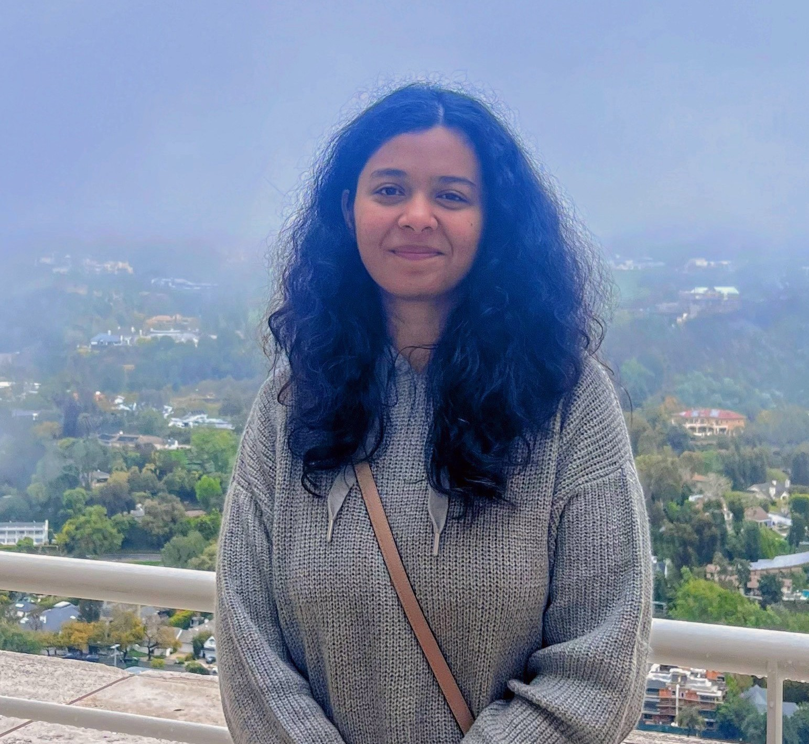
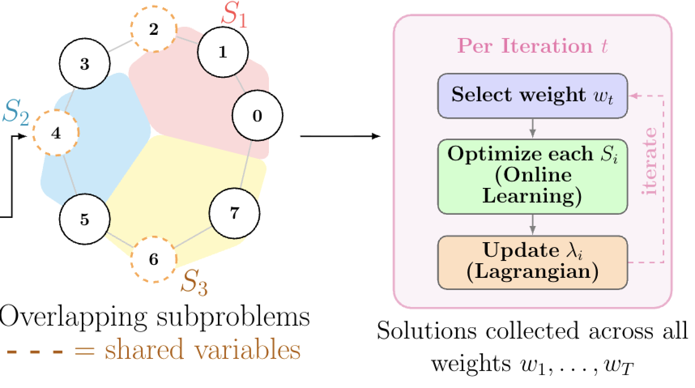
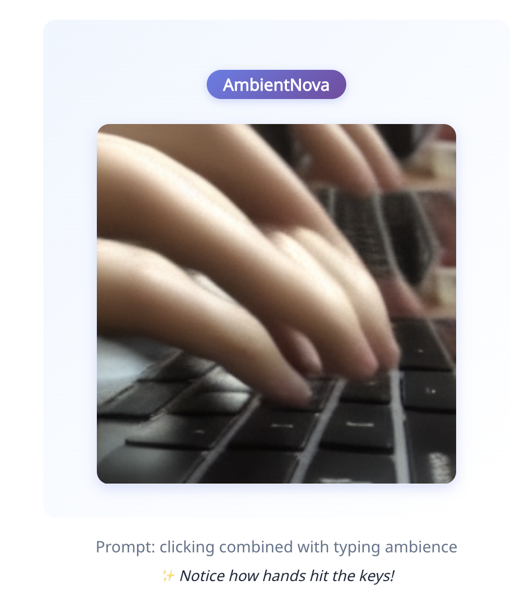
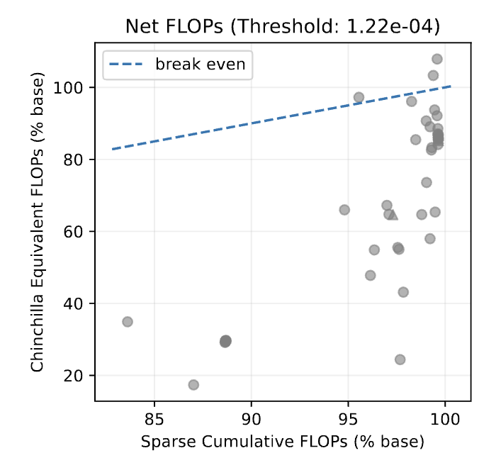
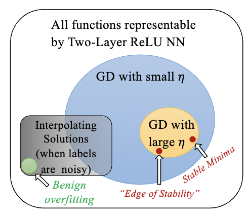
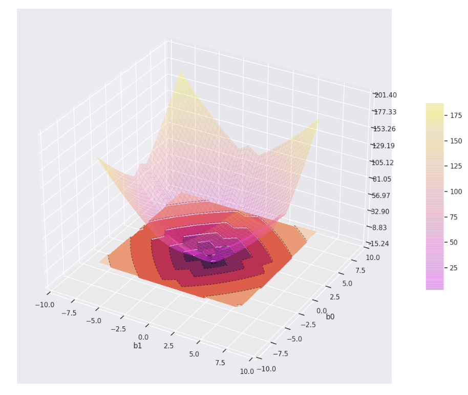
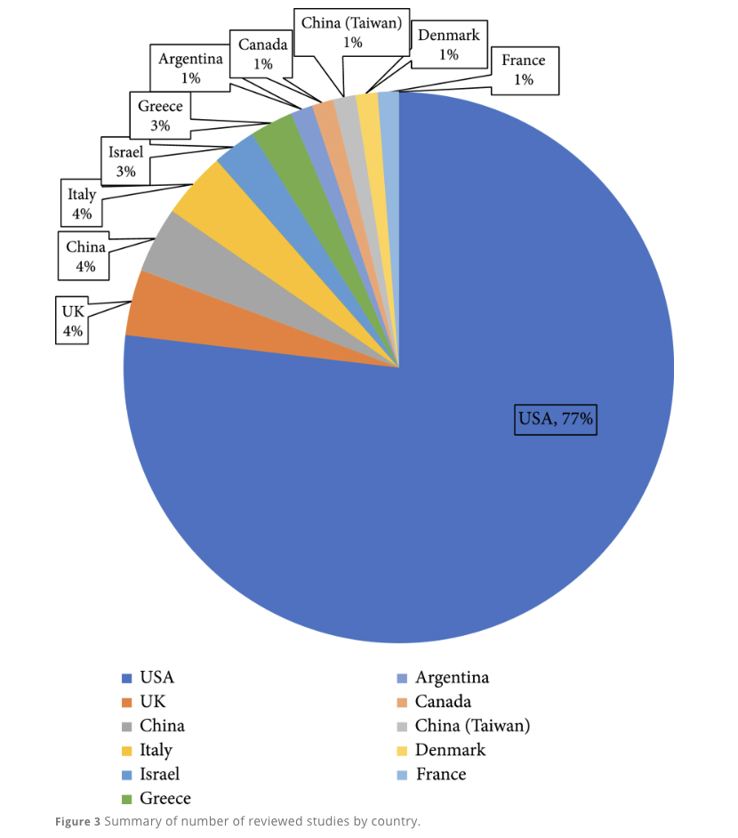
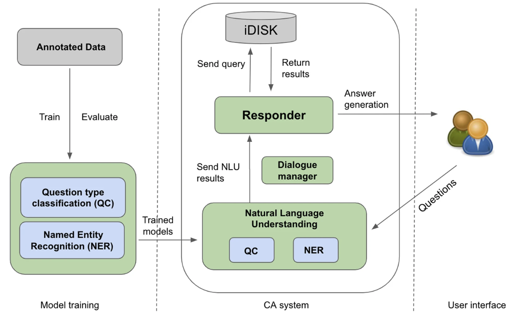
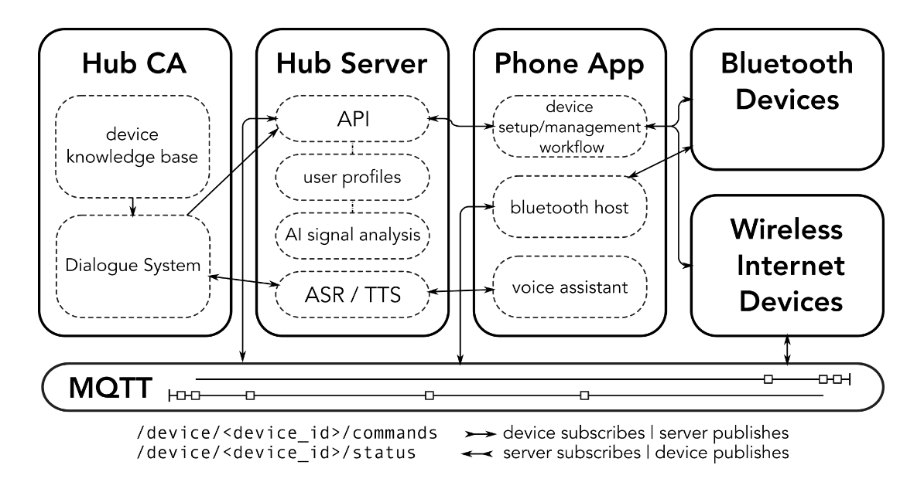
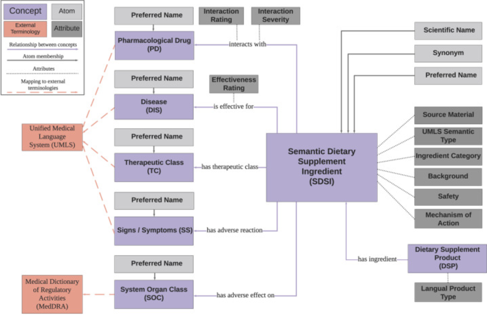

I am a forth year Ph.D student at University of California, San Diego (CSE), fortunately advised by Prof. Yi-An Ma. I also work closely with Prof. Rose Yu and Prof. Yu-Xiang Wang.
I spent my recent summers interning at Amazon Alexa AI (2025) and Cerebras (2024).
Prior to my doctoral studies, I earned my Masters at the University of Minnesota, Twin Cities, advised by Prof. Ju Sun (GLOVEX lab). I also worked as a Research Assistant with Prof. Rui Zhang from 2019–2021. I completed my undergraduate degree at BITS Pilani, India.
My research develops principled and scalable algorithms for modern machine learning, centering on generative models, optimization theory, and large language models. I am driven by a core question: how can we design learning algorithms that are simultaneously theoretically grounded, computationally efficient, and practically impactful?

Reformulates multi-objective combinatorial optimization as online learning over decomposed decision spaces, achieving 80–98% of specialized solvers with two to three orders of magnitude improvement in sample and computational efficiency.

Temporally aligned multi-modality video generation using latent diffusion models for ambient sounds. Work done as an Applied Scientist II Intern at Amazon Alexa+ AI, Bellevue, WA.



Adaptive optimizers that expedite exploration with faster convergence while ensuring avoidance of over-exploitation, leading to convergence to good solutions.

A scoping review of SBDH factors, the relationship between SBDH and diseases, NLP techniques to extract SBDH from clinical notes, and predictive models using SBDH factors.

Develops the first Conversational Agent system for Dietary Supplement use using the MindMeld framework and iDISK knowledge base.

A proof-of-concept framework for enhancing health and wellbeing via tailored wearable and Conversational Agent solutions for non-invasive monitoring and personalized interventions.

A prototype conversational agent system catered to resolve user queries regarding dietary supplements.